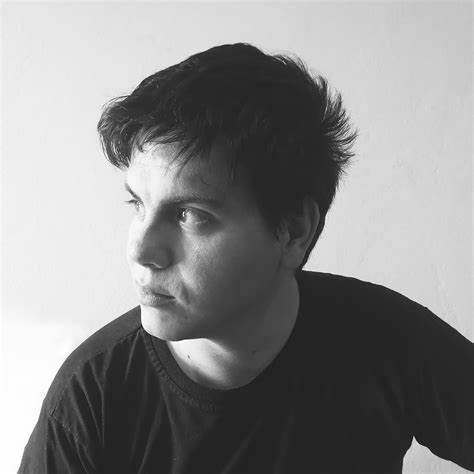

- Nombres: Leonardo Alcides
- Apellidos: Leguizamón Alegre
- Nacimiento: 30/12/1991
- Cédula: 4.575.156
- Estado Civil: Soltero
- Nacionalidad: Paraguaya
- Departamento: Misiones
- Ciudad: San Juan Bautista
SOBRE MI
Soy Leo Leguizamón, profesional autodidacta en diseño y tecnología, especializado en Front-End. Destaco en la creación de marcas, diseño publicitario y atractivas interfaces web. Fundador de las Olimpiadas Estudiantiles Sanjuaninas y colaborador en festivales. Creatividad, atención al detalle y enfoque multidisciplinario son mis fortalezas. Emocionado por futuras oportunidades en diseño y tecnología.